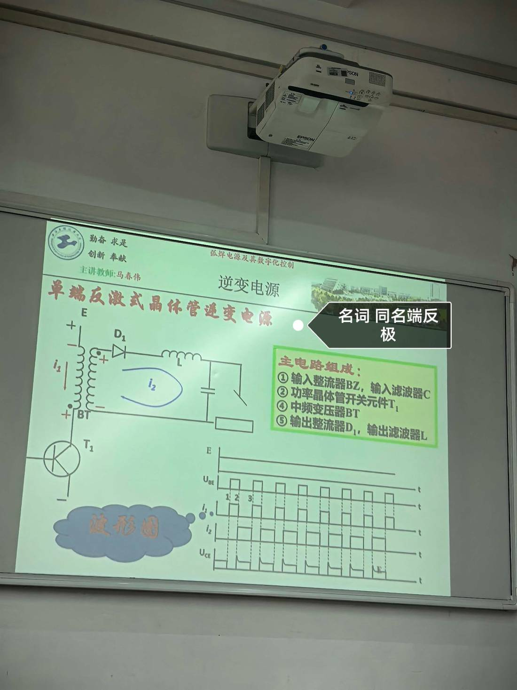

13 手写笔记/课堂实拍/kt-02 单端反激式晶体管逆变电源（主电路组成与波形）
kt-02 单端反激式晶体管逆变电源（主电路组成与波形）
📷 课堂实拍 · 老师标注为重点（原图见下；文字为转录，公式/接点以图为准）
单端反激式晶体管逆变电源（主电路组成与波形）

实拍转录
- 老师红字标题：单端反激式晶体管逆变电源。
- 老师标注：「名词 同名端反极」——反激式的变压器同名端反接，这是与正激式的分界。
- 主电路组成：① 输入整流器 BZ、输入滤波器 C；② 功率晶体管开关元件 T₁；④ 中频变压器 BT；⑤ 输出整流器 D₁、输出滤波器 L。
- 波形图四组：E（输入直流）、U_BE（基极驱动）、i₁（一次电流）、i₂（二次电流）、U_CE（管压降）。
- T₁ 导通时能量储存在变压器里，T₁ 截止时由 D₁ 向负载释放——所以叫"反激"。
本页重点
- 判据（对照 p255）：正激＝一次有电流时二次有电流；反激＝一次无电流时二次才有电流。
- 反激式变压器兼作储能电感，同名端反接是关键；主电路只有一只开关管，适合小功率。
- 波形：U_BE 与 i₁ 同步通断，i₂ 在 T₁ 截止期间才出现，U_CE 关断瞬间有尖峰（需吸收）。
考点（怎么考）
- 名词解释：同名端反极 / 正激与反激的区别。
- 写出主电路组成（①BZ ②T1 ④BT ⑤D1+L），注意课件编号跳号是原样。
- 看波形说状态：给 i₁、i₂ 波形能判断正激还是反激。
对应讲义页
关联
- 概念卡：单端逆变电路 · 逆变主电路
- 讲义：00 第6章 逆变式 导航 · 总览：课堂实拍总览
- 索引：01 弧焊电源 MOC · 课件标红总表